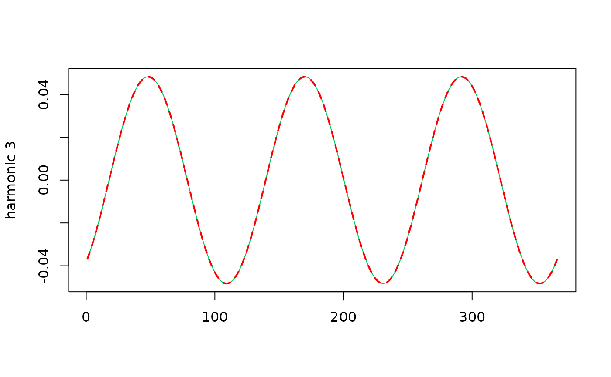

Create a Basis of Sine Waves with Given Phases
sinBasis.RdBasis of sine wave functions \(s_k(t)\) with the phases
\(\phi_k\) given in phi corresponding to the periods
\(365.25 / k\).
Arguments
- dt
A vector with class
"Date"or"POSIXct"representing the days at which the sine waves basis functions are to be evaluated.- df
Odd number as in
tsDesign.- phi
Vector of \(K\) phases where \(K\) is equal to
(df - 1) / 2.- cst
Logical. If
TRUEa constant column with value 1.0 is added as a first column.- keepTrig
Logical. If
TRUE, the cos-sin functions are joined as columns of the result. So the returned matrix then does not correspond to a basis. Used mainly for tests.
Value
A numeric matrix containing as columns the \(K\) basis
functions \(s_k(t)\), and with its rows corresponding to the
time \(t\) given by Date. The names of the \(K\)
sine wave function have the prefix "sinjPhi" so are
"sinjPhi1", "sinPhij2", ... This is aimed to
recall that the phases \(\phi_k\) were given. If cst
is TRUE and keepTrig a constant column with
value 1.0 is added, and if keepTrig is TRUE the
trigonometric functions (with phase zero) are added as well.
Details
For a time \(t\) the value of the \(k\)-th function is given by
$$s_k(t) := \sin\{2 \pi k [j_t - \phi_k] / 365.25)$$
for \(k=1\) to K, where \(j_t\) is the Julian day corresponding to \(t\). This function is useful to provide a basis of functions with yearly seasonality that are suitable for meteorological variables. For instance the phase for the first harmonic of the daily temperature in France is such that the annual maximal temperature "normally" happen at the end of July.
Note
This functions uses the tsDesign function with
type = "trigo".
Caution
This function is likely to be removed. It is
safer to use tsDesign with the argument
phi.
Examples
## Use only full years to maintain near orthogonality
df <- subset(Rennes, Year <= 2020 & Year >= 1960)
K <- 3
## Design of trigonometric functions
desTrig <- tsDesign(dt = df$Date, df = 2 * K + 1, type = "trigo")
fit <- lm(formula = TX ~ Cst + cosj1 + sinj1 + cosj2 + sinj2 + cosj3 + sinj3 - 1,
data = data.frame(df, desTrig$X))
betaHat <- coef(fit)
## find the phases
phiHat <- phases(betaHat)
gamma <- attr(phiHat, "amplitude")
## Design of sine waves with prescribed phases
desSin <- tsDesign(dt = df$Date, df = 2 * K + 1,
type = "sinwave", phi = phiHat)
fit2 <- lm(formula = TX ~ Cst + sinjPhi1 + sinjPhi2 + sinjPhi3 -1,
data = data.frame(df, desSin$X))
## should be zero
max(abs(predict(fit) - predict(fit2)))
#> [1] 1.24345e-14
## the amplitude and the coef
rbind(coef(fit2), c(NA, gamma))
#> Cst sinjPhi1 sinjPhi2 sinjPhi3
#> [1,] 16.20282 7.937385 0.8769553 0.04824877
#> [2,] NA 7.937385 0.8769553 0.04824877
j <- 3
indTrig <- paste0(c("cosj", "sinj"), j)
indSin <- paste0("sinjPhi", j)
plot(desTrig$X[1:366 , indTrig] %*% betaHat[indTrig], type = "l",
col = "SpringGreen3", xlab = "", ylab = paste("harmonic", j))
lines(desSin$X[1:366, indSin] * gamma[j], col = "red", lwd = 2, lty = "dashed")
